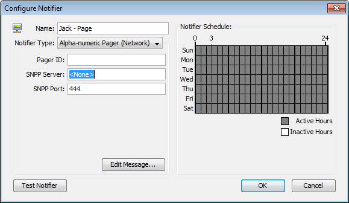

Configuring a Page Notifier to Send a Page Using SNPP (Network)
Use InterMapper's Simple Network Paging Protocol (SNPP) feature to send pages
over a network. Using this protocol, pages can be sent quickly and reliably,
without the use of an analogue modem or a separate telephone line.


To configure:
- Create a new notifier.
- From the Notifier Type dropdown menu, select Alpha-numeric
Pager (Network). The example below shows the Configure Notifier window with
the Alpha-numeric Pager (Network) type.
- In the Pager ID box, enter the ID of the pager you wish to
call.
- In the SNPP Server box, enter the IP address or domain name
of the SNPP Server.
-
If you want to use a port other than the default SNPP port, enter it in
the SNPP Port box.
Contact your pager provider for IP address, domain name, and SNPP port information.
- Click Edit Message... to edit the message that is sent to
the pager.
- In the Notifier Schedule panel, choose the hours during which
the page will be sent.
- When finished, click OK.
Note:
InterMapper may not be able to reach
your SNPP-based paging service via the Internet if your WAN
circuits or routers are down. Be sure that you have a backup
notification mechanism for failures to critical services. See the workaround in Alerts Via Cell Phone for a possible approach.